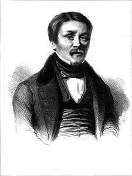
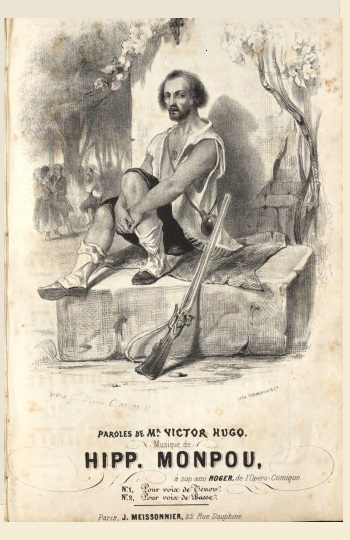
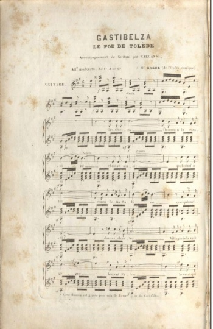
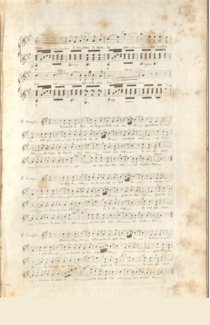

Mis en musique par Hippolyte Monpou (1804-1841) en 1837




Strophes 1, 4, 5 et 9 publiées en 1837
Article Wikipédia "Hippolyte Monpou" (extraits)
Hippolyte Monpou (né à Paris le 12 janvier 1804 - décédé à Orléans le 10 août 1841) est un compositeur et organiste français.
Triomphe de la romance
[Monpou commença sa carrière comme organiste]
Entre musique sacrée et musique profane, la révolution de 1830 tranchera. Les écoles de musiques religieuses, y compris létablissement de Choron, doivent fermer leurs portes. Au milieu de la crise, le mouvement romantique fait une entrée tumultueuse sur la scène culturelle. Monpou ralliera le mouvement et composera la musique de L'Andalouse sur des paroles d'Alfred de Musset. Une fois encore, il sagit dune romance, mais avec un ton différent où érotisme et insolence remplacent les sentiments, souvent à leau de rose, qui caractérisent le genre.
Le succès est instantané et immense. Mieux encore, pour un jeune artiste, la romance fait scandale, ainsi que le rappelle Théophile Gautier: « Quand [Monpou] sasseyait au piano, lil en feu, la moustache hérissée, il se formait autour de lui un cercle de respectueuse terreur : aux premiers vers de LAndalouse, les mères envoyaient coucher leurs filles et plongeaient dans leurs bouquets, dun air de modeste embarras, leur nez nuancé des roses de la pudeur. La mélodie effrayait autant que les paroles! Peu à peu, cependant, lon finit par sy faire; seulement, on substituait teint à sein bruni, et lon disait: Cest la maîtresse quon me donne au lieu de: Cest ma maîtresse, ma lionne qui paraissait, en ce temps-là, par trop bestial et monstrueux.»
Monpou est devenu le musicien romantique par excellence. Ami des écrivains Victor Hugo, Alfred de Musset, Frédéric Soulié, Alexandre Dumas, Théophile Gauthier, ceux-ci le lui rendaient bien, ainsi que lexplique ce dernier: « Les poètes aimaient beaucoup ce musicien qui respectait leurs paroles et ne dérangeait pas léconomie de leurs strophes savantes. Monpou aimait les rythmes difficiles, et prétendait que les coupes peu usitées amenaient des motifs nouveaux. Bref, il a été l'un des nôtres et comme le Berlioz de la ballade. »
Par contre, cette musique, avec ses cadences brusques et sonores qui ne sont pas sans rappeler la manière de Haendel, plaira moins aux musiciens, en particulier aux critiques toujours soucieux de préserver la musique ancienne de la contagion des chansonnettes populaires. Les ennemis de Monpou, qui étaient nombreux, parlaient de ses fautes de composition « qui révoltaient le sentiment des musiciens, (mais qui) étaient précisément ce qui obtenait du succès dans le monde à part qui avait entrepris la déification du laid.»
Travailleur acharné, Monpou multipliera les créations: Sarah la Baigneuse de Victor Hugo, Les Colombes de Saint-Marc, Le Lever, Venise, Madrid, La Chanson de Mignon, Le Fou de Tolède Gastibelza, Les deux Archers, Les Résurrectionnistes, Le Voile blanc... Il sagit toujours de romances, mais elles se distinguent de la production courante par une incontestable originalité.
Cette volonté daller plus loin se traduit tout dabord par un renouvellement des thèmes. Il met ainsi en musique un chapitre des Paroles d'un croyant de Lamennais, le Chant d'exil de Victor Hugo ainsi que la dernière scène d'Othello, traduite par Alfred de Vigny. Bien quil nait pas de voix, il nhésite pas à chanter lui-même ses compositions dans les salons où sa verve force ladmiration.
Lopéra-comique
Encouragé par les succès qu'il remporte dans la romance, Monpou se décide enfin à aborder la scène théâtrale. Il fait représenter en 1835 au théâtre de l'Opéra Comique "Les Deux Reines", ouvrage en un acte, sur un texte de Frédéric Soulié. Lair du refrain "Adieu mon beau navire", connait un tel succès populaire que son auteur y gagne le surnom plaisant de « Monpou-mon-beau-navire»!
À partir de ce moment, ses compositions dramatiques se succèdent assez rapidement "Le Luthier de Vienne", opéra comique en un acte, dont les paroles sont dAdolphe de Leuven et Henri de Saint-Georges, est joué en 1836. Piquillo, opéra en trois actes dont le livret est dAlexandre Dumas et Gérard de Nerval, est représenté à la fin de 1837. La création de cette pièce est passée à lhistoire en raison de lamour fou que portera Gérard de Nerval à « la chanteuse à la voix de cristal, lartiste aux cheveux dor», la comédienne Jenny Colon. Pour conquérir le cur de la femme de ses rêves, Gérard de Nerval entreprend décrire une pièce dont le rôle principal mettrait en valeur le talent de Jenny Colon. Craignant de ne pouvoir y arriver seul, il demande laide dAlexandre Dumas.
Lopéra na connu « quun succès secondaire » selon les propres mots dAlexandre Dumas. La fadeur du livret sera quelque peu rachetée par la musique de Monpou et Jenny Colon triomphera dans le rôle de Sylvia ses couplets "Je ne suis point Phoebé, La déesse voilée" et lair "Ah, dans mon cur, quelle voix se réveille" enchanteront le public en raison de leur mélodie à lharmonie surprenante, mais toujours séduisante.
Les années suivantes, Monpou donne Perugina au théâtre de la Renaissance, puis Un conte d'autrefois et Le Planteur à l'Opéra-comique où il fait preuve d'idées heureuses et d'un talent réel sans pourtant renouer avec le succès des Deux Reines.
Tout change avec La chaste Suzanne, opéra en quatre actes, qui est monté au Théâtre de la Renaissance. Une fois encore le scandale est au rendez-vous, mais cette fois-ci, il est double. Dune part, le traitement burlesque du thème biblique dans le livret indispose une partie du public et, dautre part, lAcadémie royale de musique soutient que la pièce appartient au genre du « grand opéra » qui lui est exclusivement réservé. À ce titre, elle intente un procès au Théâtre de la Renaissance pour avoir outrepassé son privilège.
Le théâtre de la Renaissance doit interrompre les représentations, non pas faute de spectateurs, mais au contraire en raison même de son succès. Le coup est mal reçu de Monpou. En effet, avec La chaste Suzanne il a conscience davoir atteint la pleine maturité de son métier, ce que confirme létrange procès de lAcadémie de musique : ce nest plus de lopéra-comique, cest du « grand opéra ». Le musicologue Félix Clément, pourtant peu suspect de complaisance à son endroit, écrira dans sa monumentale rétrospective : « Au point de vue de l'inspiration musicale, l'opéra de La chaste Suzanne est, à mon avis, le meilleur ouvrage lyrique d'Hippolyte Monpou.»
La dernière pièce de Monpou représentée de son vivant est Jeanne de Naples, opéra-comique en trois actes, composée en collaboration avec Luigi Bordèse, qui remportera un vif succès auprès du public. Une fois encore, la critique dénoncera le manque dunité entre les « accents heurtés et inégaux de Monpou » et « les mélodies faciles et dans le goût italien de Bordèse.»
Une mort prématurée
Les difficultés de La chaste Suzanne et surtout les excès de travail ont lourdement taxé la santé de Monpou. Alexandre Dumas écrit quil buvait « jusquà trois ou quatre tasses de café par nuit ». Cest alors quil conclut un contrat draconien avec le librettiste en vogue Eugène Scribe pour mettre en musique "Lambert Simnel", une pièce en trois actes pour la scène de lOpéra-comique. Le thème historique emprunté à lAngleterre de la Renaissance, dans la tradition de Walter Scott, se prête particulièrement bien à limagination de Monpou. Par contre, les conditions imposées par lOpéra-comique sont draconiennes : obligation de livrer la partition à échéance rapprochée sous peine dune pénalité de 20 000 francs. Justement, Monpou a la réputation dêtre ponctuel et de toujours respecter ses engagements. À son habitude, il travaille jour et nuit. Rien ny fait. Une gastro-entérite se déclare. Il demande un sursis de 25 jours quon lui refuse. Limpitoyable direction de lOpéra-comique envoie des huissiers à répétition.
Sur les conseils de ses médecins, Monpou va à la campagne reprendre des forces. Il se réfugie chez son ami Louis-Émile Vanderburch à La Chapelle-Saint-Mesmin (bâtiment hébergeant l'actuel hôtel de ville), sur les bords de la Loire. Son état saggrave rapidement et il doit être hospitalisé en toute hâte à Orléans où il meurt quelques jours après, le 10 août 1841, à l'âge de trente-sept ans.
Sa femme, Aspasie Oschens ramène ses restes à Paris où les obsèques ont lieu le 14 août 1841 à léglise Saint-Roch. Un grand nombre d'hommes de lettres et d'artistes des théâtres lyriques assistent à cette cérémonie où un chur de la Chaste Suzanne et un air des Deux Reines, sont intercalés dans une messe de Jommelli. Il est enterré au cimetière du Père-Lachaise (58e division).
Monpou laisse en mourant deux uvres inachevées, un acte de son opéra de La Reine Jeanne et, bien sûr, plusieurs morceaux de Lambert Simnel. Ces deux ouvrages seront terminés par Adolphe Adam et montés sur scène.
Le compositeur et son uvre: de la romance à la mélodie
Le grand apport de Monpou à la musique du xixe siècle est davoir conféré ses lettres de noblesse à la romance, genre jusque-là stéréotypé et souvent mièvre. Pour mieux appréhender la portée de linnovation, il faut avoir présent à lesprit que durant la première moitié du xixe siècle, la musique vocale avait les faveurs des classes dirigeantes. Chaque salon organisait ses propres concerts où lon venait écouter des romances aussi bien que de lopéra. La romance était un petit poème musical « qui joignait la sensibilité à la grâce, le charme à lémotion ( ), moins poétique peut-être que le lied allemand, moins originale parfois, mais plus touchante que la canzone italienne».
Cest alors quintervient une jeune génération de compositeurs emmenée par Hector Berlioz et Hippolyte Monpou, avec dans leur sillage les Louis Niedermeyer, Henri Duparc, Victor Massé, etc. Ils font évoluer la romance vers ce que lon appellera « mélodie » et que Frits Noske définit comme une composition vocale avec un « style et une atmosphère (qui) se situe à mi-chemin entre la romance française et le Lied allemand». Alors que le goût dominant commence à faire la distinction entre la musique classique (on disait alors « musique ancienne ») et les genres secondaires, ce petit groupe impose la mélodie qui, sans renier ses liens avec la romance, se veut un genre « noble ».
Le recours aux poètes romantiques sera loutil de choix de ce dépassement de la romance par la mélodie. La musicologue contemporaine Victoria Graves montre bien le long travail de recherche effectué par Berlioz sur le poème de Victor Hugo "La Captive" dont la première version mise en musique en 1832 est encore une romance, mais qui sera retravaillée maintes fois jusquen 1848, où une dernière version sera sous-titrée « mélodie ». Engagé dans le même combat, Monpou naura pas loccasion de mener à terme son cheminement en raison de sa mort précoce.
La transition de la romance à la mélodie naura pas été facile, ainsi quen témoigne le long travail de Berlioz sur La Captive et dans le cas de Monpou les attaques répétées quil a subi tout au long de sa carrière et après sa mort. Citons seulement cette analyse du critique Henri Blanchard : « La simple et naïve romance ne suffit plus à nos compositeurs de salon pour exprimer un sentiment tendre, doux ou triste... Schubert est le point de mire de la jeune école musicale qui ne rêve plus que Lieder dune mélodie et dune harmonie prétentieuses, contournées, et à modulations ambitieusement ridicules.»
Il appartiendra aux poètes de rendre justice à ce pionnier méconnu de la mélodie et dabord à Verlaine qui a crié avec enthousiasme : « Laissez-moi retourner au Victor Hugo de Pétrus Borel et de Monpou !» Tout léloge que fait ensuite Verlaine du poème La Guitare, quil sobstine à appeler du titre de la pièce de Monpou Gastibelza, l'homme à la Carabine, semble plus sadresser à lauteur de la musique quà celui du texte.
Mélodies
Si j'étais petit oiseau, nocturne à trois voix sur des paroles de Béranger, 1828
À genoux, Lieder, mélodies, chur et autres pièces vocales, paroles de Victor Hugo , 1838
Addio Teresa, chanson sicilienne pour voix et piano, paroles d'Alexandre Dumas, 1840
C'est tout mon bien, mélodies, chur et autres pièces vocales, paroles de Léon Guérin L'Andalouse, voix et piano, paroles d'Alfred de Musset, 1830 Gastibelza, le fou de Tolède, (en collaboration avec F. Liszt), voix ténor et piano, paroles de Victor Hugo, 1837
Le Lever, voix et piano ou harpe, paroles d'Alfred de Musset, 1830
Madrid, voix et piano, paroles d'Alfred de Musset, 1838
La Gitana, voix et piano
Le planteur, voix solistes, chur et orchestre, 1839
Si j'étais un ange, voix et piano, paroles d'Auguste-Émile Cillart de Kermainguy, 1840
Sur la mer, voix et piano, paroles de Théophile Gauthier, 1837
La Tour de Nesle, voix et piano, paroles d'Édouard-Roger de Bully, 1832
Chanson du Triboulet, Lieder, mélodies, chur et autres pièces vocales, paroles d'Édouard Plouvier
Dans ma gondole de Venise, Lieder, mélodies, chur et autres pièces vocales, paroles d'Émile Barateau
Enfant, dis moi ta romance, Lieder, mélodies, chur et autres pièces vocales, paroles de Schoppers
La Psyché, Lieder, mélodies, chur et autres pièces vocales, paroles d'Édouard Plouvier
L'âme du bandit, Lieder, mélodies, chur et autres pièces vocales, paroles d'Antoine-Jacques Richomme
Le mal d'amour, Lieder, mélodies, chur et autres pièces vocales, paroles d'Édouard Plouvier
L'enfant perdu, Lieder, mélodies, chur et autres pièces vocales, paroles d'Édouard Plouvier
Les Champs, Lieder, mélodies, chur et autres pièces vocales, paroles de Pierre Jean de Béranger
Les deux étoiles, Lieder, mélodies, chur et autres pièces vocales, paroles d'Édouard Plouvier
Les larmes du départ, Lieder, mélodies, chur et autres pièces vocales, paroles d'Édouard Plouvier
L'espingolle, Lieder, mélodies, chur et autres pièces vocales, paroles d'Édouard Plouvier
L'étoile disparue, Lieder, mélodies, chur et autres pièces vocales, paroles d'Édouard Plouvier
L'heure où le jour s'endort, mélodies, chur et autres pièces vocales, paroles d'Édouard Plouvier
Mon fils charmant, Lieder, mélodies, chur et autres pièces vocales, paroles d'Édouard Plouvier
Pour un sourire, Lieder, mélodies, chur et autres pièces vocales, paroles d'Édouard Plouvier Sara la baigneuse, Lieder, mélodies, chur et autres pièces vocales, paroles de Victor Hugo
Venise, Lieder, mélodies, chur et autres pièces vocales, paroles d'Alfred de Musset
Les deux archers, paroles de Victor Hugo, 1834
Opéras Les deux Reines, paroles de Soulié et Arnould, 6 août 1835 Opéra-Comique
Le Lutier de Vienne, paroles de Saint-Georges et Leuven, 30 juin 1836 Opéra-Comique Piquillo, paroles de Dumas père et Nerval, 30 octobre 1837 Opéra-Comique
Un Conte d'autrefois, paroles de Leuven et Brunswick, 28 février 1838 Opéra-Comique
Pérugina la meunière, paroles de Mélesville, 20 décembre 1838 Théâtre de la Renaissance
Le Planteur, paroles de Saint-Georges, 1er mars 1839 Opéra-Comique La chaste Suzanne, opéra en quatre actes, voix solistes, chur et orchestre, paroles de Pierre Carmouche et Frédéric de Courcy, 27 décembre 1839 Opéra-Comique
La Reine Jeanne, en collaboration avec L. Bordèse, paroles de Leuven et Brunswick, 2 décembre 1840 Opéra-Comique
Lambert Simnel, paroles de Scribe et Mélesville, inachevé. Adolphe Adam a écrit le dernier acte de l'uvre qui a été créée le 14 septembre 1843 à l'Opéra-Comique